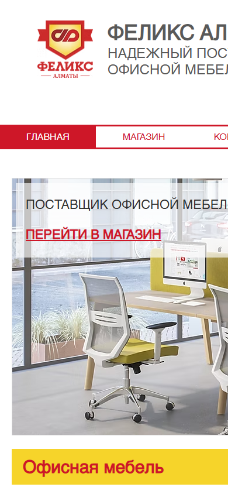
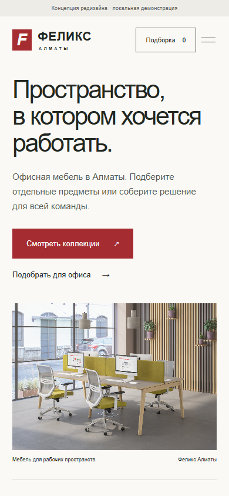

Предложение редизайна для «Феликс Алматы». Сравнение на экране телефона шириной 390 px. Независимая локальная демонстрация; сайт не опубликован.
Сейчас
Страница шире экрана: логотип, навигация и первый экран частично скрыты справа.

Предлагаем
Контент помещается в экран. Видны предложение, каталог и подборка; элементы удобно нажимать.

Результаты продаж не прогнозировались. Дизайн предлагается для обсуждения; ассортимент, цены и права на материалы нужно подтвердить.